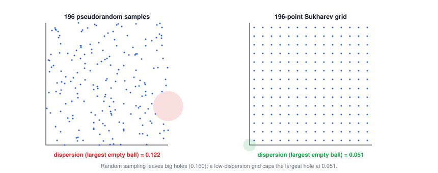
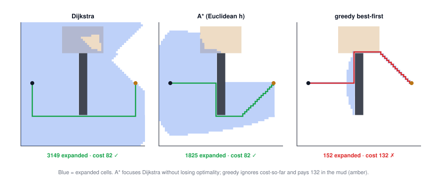
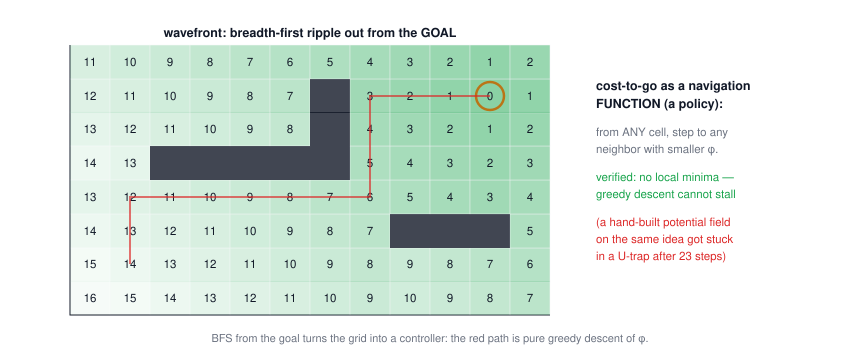

Lecture 13: Robot Planning Algorithms
CSE 276C, Lecture 13 · A. E. Frank & H. I. Christensen · LaValle, Planning Algorithms. All numbers verified in
scripts/lec13/verify.py.- A taxonomy of planning problems
- Roadmaps: planning becomes graph search
- Occupancy grids & resolution
- Geometric roadmaps
- Sampling-based planning
- RRT: the single-query workhorse
- Sampling theory: what "random" costs
- Graph search: BFS → Dijkstra → A*
- Policies: navigation functions & wavefronts
- Task planning: STRIPS in one breath
- Summary
The big picture
Everything here is one pipeline: represent free space discretely → search the resulting graph → (optionally) precompute a policy so one search answers every future query. The art is in what each representation gives up:
| approach | guarantee | pays with |
|---|---|---|
| occupancy grid | resolution-complete | memory explodes with dimension & resolution |
| geometric roadmaps (visibility, Voronoi, cells) | complete (exact) | combinatorial complexity; needs exact geometry |
| sampling (PRM / RRT) | probabilistically complete | no "no-path" answer; path quality varies |
| graph search (Dijkstra / A*) | optimal on the graph | expansions; A* needs an admissible h |
| navigation function / wavefront | policy from everywhere, no local minima | grid-wide computation per goal |
1 · A taxonomy of planning problems
The lecture's opening checklist — know which problem you actually have before picking a tool: discrete vs continuous state, deterministic vs stochastic outcomes, static vs dynamic world, fully vs partially observable, offline vs online, and (motion planning only) kinematic vs differential constraints. Shared vocabulary across all of them: state, actions, order, goal, and a criterion — feasible ("any path") vs optimal ("shortest / max clearance"), which changes the right algorithm. This lecture: continuous, deterministic, static, fully observable, offline, kinematic.
2 · Roadmaps: planning becomes graph search
A roadmap is a graph whose nodes are points of \(C_{free}\) and whose edges are simple free paths, with two promises: accessibility (any free configuration can easily reach the roadmap) and connectivity-preservation (the roadmap connects q₁ and q₂ iff \(C_{free}\) does). Build it once, agnostic of start and goal — then every query is: connect q_I and q_G to the map, search the graph. The preprocessing/query split is the economics of the whole lecture.
3 · Occupancy grids & resolution
The simplest roadmap: cover C-space with cells, mark any cell touching an obstacle blocked (conservative), connect free neighbors. Verified failure mode: a corridor of width 0.08 — a 10×10 grid (cell 0.1) blocks it entirely, no path; the 40×40 grid finds one (38 steps). If refining the grid indefinitely would eventually find any existing path, the method is resolution-complete — the guarantee is real but priced in memory: halving the cell size multiplies cells by 2ᵈⁱᵐ. Quadtrees (adaptive grids) recover most of the cost by zooming in only where cells are partially occupied.
4 · Geometric roadmaps
| roadmap | optimizes | robot flavor |
|---|---|---|
| visibility / shortest-path map | path length — hugs obstacle corners (reflex vertices + bitangents) | minimal distance; zero clearance |
| Voronoi / max-clearance map | stays equidistant from obstacles | mobile robots with localization noise |
| cell decomposition (trapezoidal) | completeness with simple pieces: split C_free into convex cells, connect cell–boundary–cell | the textbook exact method |
All exact, all complete — and all crushed by the curse of combinatorial complexity: non-convex shapes decompose into many pieces, rotations make facets explode (>70 for a toy case), and Canny's general roadmap is exponential and essentially never implemented. Which is why the field went sampling.
5 · Sampling-based planning
Abandon describing \(C_{free}\); keep only a collision checker as a black box ("is q free?") and reveal the space by querying it. Don't compute more than you have to. Two regimes:
| single-query (RRT) | multi-query (PRM) |
|---|---|
| no precomputation pays off; grow a tree from this start toward this goal | front-load a roadmap of random samples + local connections; answer many queries fast |
The price of sampling: classical completeness is impossible (you can't exhaustively sample an uncountable set), so it weakens to probabilistic completeness — if a path exists, the probability of finding it → 1 as samples → ∞; if none exists, the planner may run forever. No "no-path" certificates.
6 · RRT: the single-query workhorse
The loop, exactly as the walkthrough slides: sample \(q_{rand}\) → nearest tree vertex \(q_{near}\) → steer a step Δq toward the sample → connect if the edge is collision-free → repeat. The tree gets pulled toward large unexplored regions (each sample is most likely to land in the biggest empty Voronoi cell of the current vertices) — that's the "rapidly-exploring". Verified: through a narrow gap, 10/10 seeded runs succeed, median 65 iterations.
🕹️ Try it: watch the Voronoi bias work, then give it the bug trap:
7 · Sampling theory: what "random" costs
- Denseness: the sample sequence must get arbitrarily close to every point — random sequences are only probably dense.
- Uniformity on the right space: sampling Euler angles uniformly does not give uniform rotations — it piles up at the poles. The slides' quaternion recipe \(h = (\sqrt{1-u_1}\sin 2\pi u_2,\ \sqrt{1-u_1}\cos 2\pi u_2,\ \sqrt{u_1}\sin 2\pi u_3,\ \sqrt{u_1}\cos 2\pi u_3)\) is exactly uniform — verified: rotating a fixed vector gives z with mean −0.0006 and variance 0.3334 (uniform sphere: 0 and 1/3), while naive Euler sampling gives variance 0.252 — measurably biased.
- Dispersion: the largest empty ball among your samples. 196 random points: 0.160; a 14×14 Sukharev grid: 0.051 (= half the cell diagonal, verified). Low-dispersion and low-discrepancy sequences (Halton, lattices) "fail randomness tests" and that's fine — planners care about the biggest hole, not statistics.

8 · Graph search: BFS → Dijkstra → A*
Once anything above hands you a graph, search it systematically. BFS (FIFO) finds fewest-edges paths and is always systematic; DFS (LIFO) is cheap but only systematic on finite spaces; iterative deepening gets DFS's memory with BFS's guarantee. With edge weights (path length, terrain difficulty):
$$\text{Dijkstra: expand by } g(n) \text{ (cost-to-come)} \qquad \text{A*: expand by } f(n) = g(n) + h(n), \quad h \le h^* \text{ (admissible)}$$Verified on one 60×60 map with a wall and a 5×-cost mud region:
| search | expansions | path cost | verdict |
|---|---|---|---|
| Dijkstra | 3149 | 82 | optimal, uninformed |
| A*, Euclidean h | 1825 | 82 | optimal, 1.7× cheaper — admissibility means the heuristic only prunes |
| greedy best-first (f = h) | 152 | 132 | 20× cheaper, 61% over cost — it ignores g and plows through the mud |
| weighted A* (f = g + 3h) | 340 | 82 | fast and happened to be optimal — inadmissible h voids the guarantee, it doesn't always break the result |

🕹️ Try it: paint walls and mud, then race the three searches:
9 · Policies: navigation functions & wavefronts
A path answers one query; a policy π maps every state to an action — the robot recovers from any perturbation by just looking up its cell. The clean construction: run Dijkstra/BFS backward from the goal; the cost-to-go φ is a navigation function: φ(goal) = 0, and from every reachable cell some neighbor strictly decreases φ. Verified on our map: zero local minima, and greedy descent from the start reaches the goal in exactly φ(start) = 80 steps. Contrast the physics-inspired potential field (attractive goal + repulsive obstacles): elegant, local, cheap — and verified to jam in a U-shaped trap after 23 steps, at a local minimum that is not the goal. Unit-cost wavefront propagation is the parallelizable version (the slides' numbered-grid example), and the same ripple run from obstacle boundaries gives max-clearance maps.

10 · Task planning: STRIPS in one breath
Above motion planning sits "make me a coffee": abstract states, discrete actions. A discrete planning domain is \((\mathcal S, \mathcal A, f)\) with transition \(s' = f(s, a)\); a problem adds \(s_I\) and a goal set — and a plan is literally a path in the state-transition graph, searched with the exact algorithms of §8. Logic-based (STRIPS) representations compress the state space: instances, predicates, and operators with preconditions/effects encode \(2^{|P|\,|I|^k}\) states implicitly (10 ground predicates = 2¹⁰ states). Task planner proposes a skeleton; motion planner (this lecture) fills in the trajectories.
11 · Summary
- Classify the problem first (discrete/continuous, deterministic/stochastic, …) — the labels pick the algorithm family.
- Roadmaps turn continuous planning into graph search; build once, query many times.
- Grids are resolution-complete and memory-hungry (verified: a 0.08 gap needs finer than 0.1 cells); exact geometric roadmaps are complete and combinatorially doomed.
- Sampling trades certificates for scalability: probabilistic completeness, black-box collision checking, RRT's Voronoi-bias exploration.
- Sample on the right manifold (quaternion recipe for SO(3) — Euler sampling is measurably biased) and mind dispersion, not randomness aesthetics.
- A* with admissible h = Dijkstra's optimality at a fraction of the expansions (1825 vs 3149); greedy and inflated heuristics buy speed with the guarantee.
- Backward search from the goal upgrades a path to a policy — navigation functions have no local minima; ad-hoc potential fields do.
⚠️ Typos in the slides to watch out for
- Sampling-uniformity slide: "the probability density function is consistent the Haar measure" → consistent with the Haar measure.
- Taxonomy slide: "Partial Observability" is paired with "Fully Observable" — mixed noun/adjective; read both as observability classes. Also "Sometimes this can refer if a plan is…" → refer to whether.
- Shared-concepts slide: "states and actions occur in a set, monotonic order" → read "fixed, monotonic".
- Task-planning slide: "A discrete planing problem" → planning.
- RRT pseudocode slide: line 5 reads
G.add_edge(q_near, q_rand)— with the steer step of the walkthrough it should add (q_near, q_new); as printed it skips the Δq clamp.